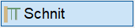
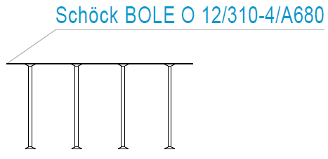

")
")

Darstellung der Schöck Bole® bzw. Halfen HDB-Dübelleistendefinitionen im Schnitt.
 |
Vorbemerkungen
·Die Querschnitte werden nicht in die Stahlliste aufgenommen (Bauteilfaktor = 0).
·Die Dübelleistenverlegung ist nicht mit dem Querschnitt verknüpft. Bei einer Änderung der Dübelleistenverlegung passt sich der Querschnitt daher nicht an.
·Ein Querschnitt kann nicht mit der Änderungsfunktion [ändern] geändert werden. Löschen Sie in diesem Fall den Querschnitt und generieren Sie ihn neu.
·Der aktuell eingestellte Systemwinkel wird beim Platzieren berücksichtigt.
·Der Anfasspunkt bei [Lage] ist bei HDB-, Schöck Bole (Standard)- und Schöck Bole O-Dübelleisten immer oben links bzw. rechts, wenn um die Y-Achse gespiegelt. Bei Schöck Bole U und Schöck Bole F entsprechend unten links bzw. rechts.
·Die Darstellung des Querschnitts und der Beschriftung mit der Funktion [Beschr] kann vorab eingestellt werden.
·Für selbsterstellte HDB-Dübelleisten mit einem Durchmesser von 18 mm können keine Schnittdarstellungen erzeugt werden.
1.Dübelleiste auswählen und Maßstab angeben
Führen Sie einen der folgenden Schritte aus:
a)Klicken Sie in der Zeichnung die Dübelleiste an, die im Schnitt dargestellt werden soll. [Welcher Typ?].
b)Wählen Sie unter der Abfrage eine Dübelleistendefinition aus.
In der Liste wird an oberster Position die aktuell voreingestellte Definition angezeigt. Alle übrigen Einträge sind Definitionen, die bereits auf dem Plan vorhanden sind.
c)Klicken Sie einen bereits verlegten Querschnitt an.
ISBCAD erstellt eine Kopie des Querschnitts.
§Geben Sie den Maßstab für den Querschnitt ein oder klicken Sie einen Wert in der Liste an. Bestätigen Sie mit der Eingabetaste oder mit Rechtsklick. [Maßstab (Schnitt)].
Vorgeschlagen wird der aktuelle Maßstab der Zeichnung.
2.Schnittdarstellung platzieren
§Wählen Sie unterhalb der Abfrage, wie der Querschnitt platziert werden soll. [Lage].
Frei platzieren. §Platzieren Sie den Querschnitt innerhalb der Zeichenfläche mit einem Linksklick. |
|
Die Lage wird über die X- und Y-Koordinate eines Bezugspunktes beschrieben. §Setzen Sie den Querschnitt an einer beliebigen Stelle ab. §Klicken Sie einen Referenzpunkt an dem Querschnitt an. Dieser Punkt wird als Bezugspunkt für die Koordinatenangabe genommen. [Referenzpunkt]. §Bestimmen Sie die Lage des Querschnitts durch Anklicken und bestätigen Sie jeweils mit Rechtsklick. [X-Lage]; [Y-Lage]. -Sie können nach dem Anklicken eines Punktes noch einen Abstand zum Bezugspunkt angeben. Für einen negativen Abstand verwenden Sie das negative Vorzeichen. -Wenn Sie zwei verschiedene Punkte anklicken, wird der X-Wert des ersten Punktes und der Y-Wert des zweiten Punktes genommen. Nach dem Bestätigen der Y-Lage wird der Schnitt am angegebenen Punkt platziert. |
|
|
(Optional) |
Spiegelt den Querschnitt um die lokale Y-Achse. Der eingestellte Systemwinkel wird berücksichtigt. Setzen Sie den Querschnitt nach dem Spiegeln frei oder gezielt ab. |
Zugehörige Aufgaben:
Zugehörige Referenzen: